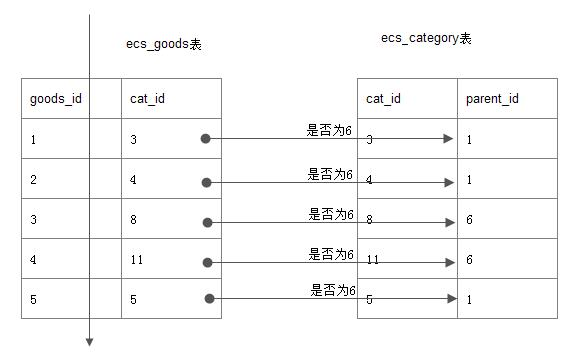

mysql优化之in,exists,count,group by和union
慎用in和exists
in
in 型子查询引出的陷阱
题: 在ecshop商城表中,查询6号栏目的商品, (注,6号是一个大栏目)
最直观的:1
2mysql> select goods_id,cat_id,goods_name from goods where cat_id in (select
cat_id from ecs_category where parent_id=6);
误区: 给我们的感觉是, 先查到内层的6号栏目的子栏目,如7,8,9,11
然后外层, cat_id in (7,8,9,11)
事实: 如下图, goods表全扫描, 并逐行与category表对照,看parent_id=6是否成立

原因: mysql的查询优化器,针对In型做优化,被改成了exists的执行效果.
当goods表越大时, 查询速度越慢.
改进: 用连接查询来代替子查询
1 | explain select goods_id,g.cat_id,g.goods_name from goods as g |
exists
exists子查询
题: 查询有商品的栏目.
按上面的理解,我们用join来操作,如下:1
2mysql> select c.cat_id,cat_name from ecs_category as c inner join goods as g
on c.cat_id=g.cat_id group by cat_name; 见下面query36
优化1: 在group时, 用带有索引的列来group, 速度会稍快一些,另外,
用int型 比 char型 分组,也要快一些. 见下面query37
优化2: 在group时, 我们假设只取了A表的内容,group by 的列,尽量用A表的列,
会比B表的列要快. 见下面query38
优化3: 从语义上去优化1
2select cat_id,cat_name from ecs_category
where exists(select *from goods where goods.cat_id=ecs_category.cat_id) 见下面query40
1 |
|
from 型子查询:
注意::内层from语句查到的临时表, 是没有索引的.
所以: from的返回内容要尽量少.
count() 优化
误区:
1:myisam的count()非常快
答: 是比较快,.但仅限于查询表的”所有行”比较快, 因为Myisam对行数进行了存储.
一旦有条件的查询, 速度就不再快了.尤其是where条件的列上没有索引.
2: 假如,id<100的商家都是我们内部测试的,我们想查查真实的商家有多少?
select count() from lx_com where id>=100; (1000多万行用了6.X秒)
小技巧:
select count() from lx_com; 快
select count() from lx_com where id<100; 快
select count() frol lx_com -select count() from lx_com where id<100; 快
select (select count() from lx_com) - (select count(*) from lx_com where id<100)
group by
注意:
1:分组用于统计,而不用于筛选数据.
比如: 统计平均分,最高分,适合, 但用于筛选重复数据,则不适合.
以及用索引来避免临时表和文件排序
2: 以A,B表连接为例 ,主要查询A表的列,
那么 group by ,order by 的列尽量相同,而且列应该显示声明为A的列
union优化
注意: union all 不过滤 效率提高,如非必须,请用union all
因为 union去重的代价非常高, 因此只能放在程序里去重.